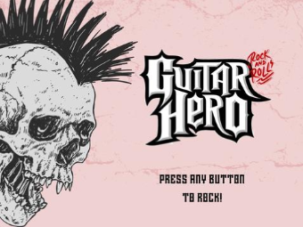
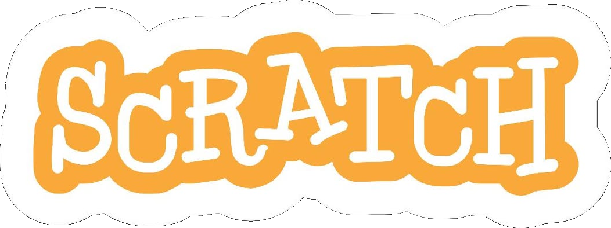
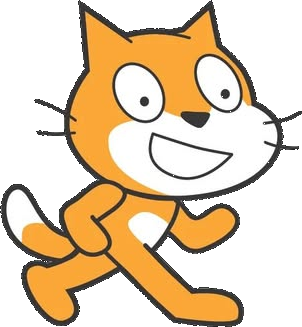

Makey Makey
Guitar Hero
O Projeto Makey Makey é um jogo criado no Scratch baseado no Guitar Hero, desenvolvido por Caio Henrique e Livia Cardia do 3º ano de Informática.
Uma versão moderna, animada e responsiva da vitrine de projetos criados pelas turmas de Informática para Internet, com destaque especial para o projeto Makey Makey Guitar Hero.


Projetos jogáveis no Scratch
Os jogos foram organizados em uma vitrine moderna, com visual leve, cards interativos e destaque para a identidade laranja do Scratch.
Projeto Makey Makey desenvolvido no Scratch, inspirado no estilo Guitar Hero.

O Projeto Makey Makey é um jogo criado no Scratch baseado no Guitar Hero, desenvolvido por Caio Henrique e Livia Cardia do 3º ano de Informática.
Aqui estão os 15 jogos produzidos pelos alunos do 1º Ano de Informática para Internet.